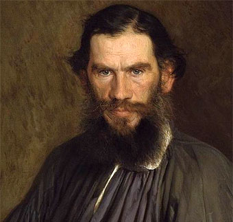

Mary Shelley
En 1818, la escritora londinense dio vida al monstruo más célebre de la literatura, que luego se convertiría también en uno de los más terroríficos del cine: "Frankenstein". La adaptación de la novela de Mary Shelley realizada por el director James Whale, junto con la tierna interpretación de esta criatura en busca de su identidad que hizo Boris Karloff, está considerada como una de las mejores películas de terror de todos los tiempos.

Charles Dickens
La obra del novelista inglés que retrató la era victoriana a través del humor, la ironía y la crítica social, generó un gran impacto en la sociedad de la época por el claro desafío a sus convenciones y estereotipos. Escribió obras de profunda sensibilidad social como: "Oliver Twist", "Nuestro amigo común", "Cadenas rotas", etc.
Victor Hugo
Una de las más grandes obras del siglo XIX surgió de la pluma de este poeta y escritor francés, que defendió a los oprimidos en la inolvidable “Los Miserables”. Una historia de sueños rotos, amor no correspondido, pasión, sacrificio y redención que llegó al cine de la mano de Jean-Paul Le Chanois en 1958.
Julio Verne
Uno de los padres de la ciencia ficción, célebre por sus novelas de aventuras, Verne contó con diversas adaptaciones de sus obras. La primera de ellas fue “20.000 leguas de viaje submarino” (1916), una extraordinaria película muda dirigida por el pionero del cine Stuart Paton, en cuya trama también se integran elementos de distintas obras del fantástico autor francés, “La isla misteriosa” entre ellas. También se destaca su célebre novela "La vuelta al mundo en 80 días".

Fiodor Dostoyevski
“Dostoyevski es Rusia. Rusia no existe sin Dostoyevski”. Las breves palabras del escritor Alekséi Rémizov describen a este autor que escribió “Crimen y Castigo” y “Los hermanos Karamazov” como uno de los principales autores de su país. Pero la influencia de este genio del existencialismo y del expresionismo también llegó a la literatura universal del siglo XX. También se reconoce su novela "El idiota".

Franz Kafka
Su obra más destacada es "la metamorfosis" donde habla sobre la alienación del individuo y los conflictos interpersonales a través del existencialismo y el expresionismo. también es autor de “El Castillo” y “El proceso”, dos novelas que enfrentan a sus protagonistas al poder de la ley y la burocracia. Muchos consideran la novela "La metamorfosis" como una especie de autobiografía de Kafka, ya que estaría basada en su estado de ánimo y su propia percepción física.

Oscar Wilde
Considerado un ingenioso dramaturgo y novelista irlandés, autor de obras tan reconocidas como “El retrato de Dorian Gray”, “La importancia de llamarse Ernesto” o “El abanico de Lady Windermer”, que le permitieron convertirse en una de las mayores personalidades de su tiempo, y se enfrentó a la hipocresía, la estupidez y los tabúes de la sociedad británica. Wilde aplicó en sus obras los ideales del esteticismo, la filosofía que lo llevó a considerar la belleza y el arte por encima de la moral.
Edgar Allan Poe
Generalmente reconocido como uno de los maestros universales del relato corto, del cual fue uno de los primeros practicantes en su país. Fue renovador de la novela gótica, recordado especialmente por sus cuentos de terror. Considerado el inventor del relato detectivesco, contribuyó asimismo con varias obras al género emergente de la ciencia ficción. "El Cuervo", "La Obsesión" "El Palacio de los Espíritus", "La Tumba de Ligeia", "La Máscara de la Muerte Roja" o "La Caída de la casa Usher" son una de sus tantas obras reconocidas.
Herman Melville
La épica batalla entre el hombre y la fiera que tiene lugar en su célebre obra “Moby Dick” llevó al escritor estadounidense a convertirse en uno de los más importantes de la historia de la literatura.
León Tolstói
Autor adscrito a la corriente realista, quien intentó con sus obras reflejar la sociedad en la que vivía. Fruto de esta inquietud, escribió novelas de la talla de “Guerra y Paz” y “Anna Karenina”.
H.P. Lovecraft
Es el gran innovador del cuento de terror, el que aportó una mitología propia. Su obra constituye un clásico del horror cósmico, una corriente que se aparta de la temática tradicional del terror sobrenatural (satanismo, fantasmas), incorporando elementos de ciencia ficción (razas alienígenas, viajes en el tiempo, existencia de otras dimensiones). Lovecraft cultivó asimismo la poesía, el ensayo y la literatura epistolar. Escribió obras como "La llamada de Cthulhu" y "Los gatos de Ulthar".

J.R.R. Tolkien
Escritor y lingüista británico, Tolkien es conocido principalmente por su trilogía de "El señor de los anillos", obra de fantasía considerada como todo un clásico de la literatura universal y que comparte escenario con otra de sus grandes novelas, "El hobbit".
J.K. Rowling
Escritora y productora de cine escocesa, es conocida principalmente por su serie de libros juveniles protagonizados por Harry Potter, verdadero fenómeno literario a nivel mundial que ha conseguido vender más de 400 millones de ejemplares, siendo traducida a más de 20 idiomas.

Suzanne Collins
Escritora de literatura juvenil y guionista americana, Suzanne Collins estudió Arte, Teatro y Comunicación en la Universidad de Indiana, completando su formación con un máster en Escritura Dramática. Collins es conocida a nivel internacional por su saga "Los juegos del hambre".